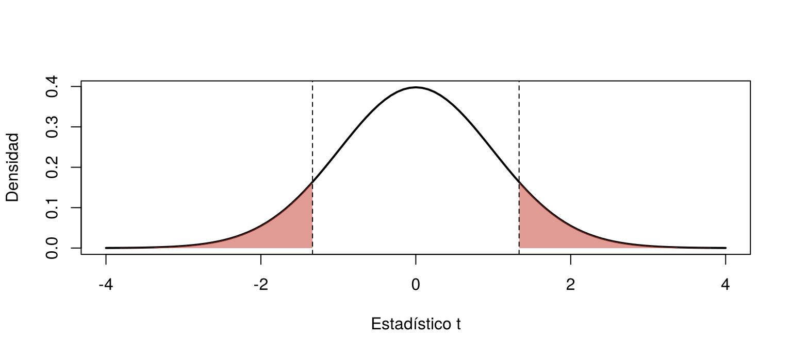
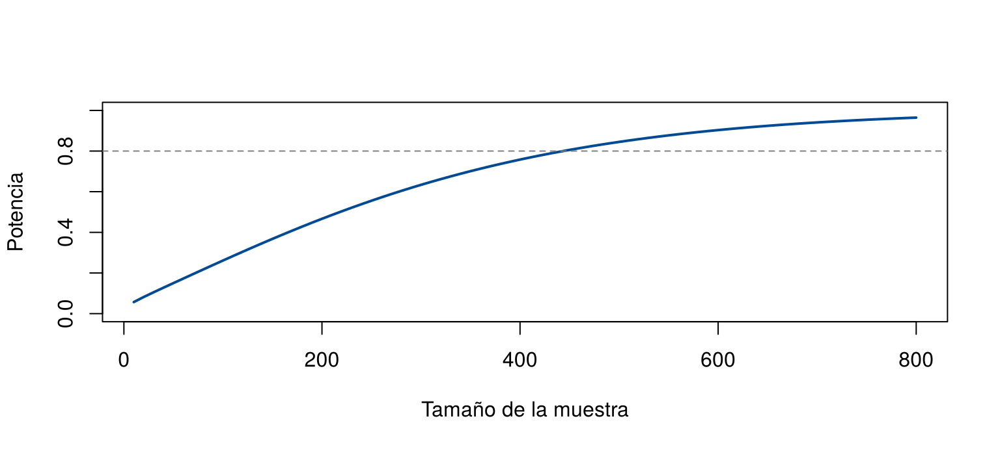

Una universidad cambió el plan de estudios de una carrera. Con el plan anterior, los estudiantes tardaban en promedio 7.30 años en graduarse. En una muestra de 100 egresados del plan nuevo, el promedio fue de 7.50 años. ¿Cambió el tiempo de graduación, o la diferencia de 0.2 años se explica por el azar del muestreo?
Una prueba de hipótesis responde este tipo de preguntas: mide qué tan compatibles son los datos con una afirmación sobre la población. Esta página presenta las ideas comunes a todas las pruebas: hipótesis, estadístico, valor p, errores y potencia. Las pruebas concretas se presentan en las dos páginas siguientes. Los bloques de código se ejecutan en orden.
Una prueba de hipótesis funciona como un juicio. Se parte de una afirmación por defecto, la presunción de inocencia, y solo se abandona si la evidencia en su contra es fuerte. Si la evidencia no alcanza, el acusado no queda declarado inocente: solo no se le pudo probar la culpa.
| Juicio | Prueba de hipótesis |
|---|---|
| El acusado es inocente hasta que se pruebe lo contrario | Se supone que la hipótesis nula es cierta |
| Se reúnen pruebas | Se toma una muestra y se calcula un estadístico |
| ¿Las pruebas serían muy raras si fuera inocente? | ¿Los datos serían muy raros si la hipótesis nula fuera cierta? |
| Culpable, o no se pudo probar la culpa | Se rechaza la hipótesis nula, o no se rechaza |
Las dos hablan de parámetros de la población, nunca de la muestra. En el ejemplo de la carrera:
\[ H_0: \mu = 7.30 \qquad\qquad H_1: \mu \neq 7.30 \]
| Tipo de prueba | Hipótesis alternativa | Cuándo se usa |
|---|---|---|
| Bilateral | \(\mu \neq 7.30\) | Interesa cualquier cambio, hacia arriba o hacia abajo |
| Unilateral derecha | \(\mu > 7.30\) | Solo interesa si el valor aumentó |
| Unilateral izquierda | \(\mu < 7.30\) | Solo interesa si el valor disminuyó |
La dirección se decide antes de ver los datos, según la pregunta de investigación.
El estadístico de prueba mide qué tan lejos está la estimación del valor de \(H_0\), en unidades de error estándar. Para una media:
\[ t = \frac{\bar{x} - \mu_0}{s / \sqrt{n}} \]
En el ejemplo, con \(\bar{x} = 7.50\), \(s = 1.5\) años y \(n = 100\):
\[ t = \frac{7.50 - 7.30}{1.5 / \sqrt{100}} = \frac{0.20}{0.15} = 1.33 \]
La media de la muestra está 1.33 errores estándar por encima del valor de la hipótesis nula. ¿Es mucho o poco? Para responder, se compara con lo que se esperaría si \(H_0\) fuera cierta: en ese caso, el estadístico sigue una distribución t con 99 grados de libertad.
El valor p es la probabilidad, calculada suponiendo que \(H_0\) es cierta, de obtener un estadístico tan extremo o más que el observado. En una prueba bilateral se cuentan los dos extremos:
t_obs <- (7.50 - 7.30) / (1.5 / sqrt(100))
t_obs[1] 1.3333332 * (1 - pt(t_obs, df = 99)) # valor p bilateral[1] 0.1854824curve(dt(x, df = 99), -4, 4, lwd = 2, xlab = "Estadístico t", ylab = "Densidad")
cola <- seq(t_obs, 4, length.out = 100)
polygon(c(t_obs, cola, 4), c(0, dt(cola, 99), 0), col = adjustcolor("#C0392B", 0.5), border = NA)
polygon(c(-4, -rev(cola), -t_obs), c(0, dt(-rev(cola), 99), 0), col = adjustcolor("#C0392B", 0.5), border = NA)
abline(v = c(-t_obs, t_obs), lty = 2)
Distribución del estadístico si la hipótesis nula es cierta. El área roja, a los dos lados de ±1.33, es el valor p.
Si el tiempo de graduación no hubiera cambiado, en el 18.5 % de las muestras de 100 egresados se obtendría una diferencia igual o mayor que la observada. No es un resultado raro: los datos son compatibles con \(H_0\).
Un valor p pequeño indica que los datos serían poco comunes si \(H_0\) fuera cierta, y por eso se consideran evidencia en su contra.
Antes de ver los datos se fija el nivel de significación, \(\alpha\), casi siempre 0.05. La regla es:
| Valor p | Decisión | Cómo se redacta |
|---|---|---|
| Menor o igual que \(\alpha\) | Se rechaza \(H_0\) | “Hay evidencia de que el tiempo de graduación cambió” |
| Mayor que \(\alpha\) | No se rechaza \(H_0\) | “No hay evidencia suficiente de que el tiempo de graduación haya cambiado” |
En el ejemplo, \(0.185 > 0.05\): no se rechaza \(H_0\). Esto no prueba que el tiempo siga siendo 7.30 años; solo dice que la muestra no da evidencia suficiente de un cambio.
La Asociación Estadounidense de Estadística (ASA) publicó en 2016 una declaración sobre el uso del valor p (Wasserstein y Lazar, 2016). Entre sus principios:
Como la decisión se toma con una muestra, puede ser equivocada:
| \(H_0\) es cierta | \(H_0\) es falsa | |
|---|---|---|
| Se rechaza \(H_0\) | Error tipo I (falso positivo) | Decisión correcta |
| No se rechaza \(H_0\) | Decisión correcta | Error tipo II (falso negativo) |
Una simulación muestra qué significa \(\alpha\). Si \(H_0\) es cierta y se repite la prueba 10 000 veces, se rechaza en cerca del 5 % de los casos:
set.seed(2026)
valores_p <- replicate(10000, t.test(rnorm(25, mean = 7.3, sd = 1.5), mu = 7.3)$p.value)
mean(valores_p < 0.05) # proporción de rechazos cuando H0 es cierta[1] 0.0483Suponga que el plan nuevo sí cambió el tiempo de graduación, de 7.30
a 7.50 años. ¿Qué tan probable es que la prueba lo detecte? La función
power.t.test() calcula la potencia:
power.t.test(n = 100, delta = 0.2, sd = 1.5, type = "one.sample")$power[1] 0.261233Con 100 egresados, la prueba solo detectaría un cambio de 0.2 años en el 26 % de los casos. ¿Cuántos egresados harían falta para una potencia del 80 %?
power.t.test(delta = 0.2, sd = 1.5, power = 0.80, type = "one.sample")$n[1] 443.424tamanos <- seq(10, 800, by = 10)
potencia <- sapply(tamanos, function(n) power.t.test(n = n, delta = 0.2, sd = 1.5, type = "one.sample")$power)
plot(tamanos, potencia, type = "l", lwd = 2, col = "#034A94", ylim = c(0, 1),
xlab = "Tamaño de la muestra", ylab = "Potencia")
abline(h = 0.8, lty = 2, col = "gray50")
Potencia de la prueba para detectar un cambio de 0.2 años, según el tamaño de la muestra.
La potencia aumenta con el tamaño de la muestra y con el tamaño del efecto que se quiere detectar, y disminuye cuando los datos son más variables. Por eso el tamaño de muestra se planea antes del estudio.
Una prueba bilateral con \(\alpha = 0.05\) y un intervalo de confianza del 95 % dan la misma conclusión: se rechaza \(H_0: \mu = \mu_0\) si y solo si \(\mu_0\) no está en el intervalo.
7.50 + c(-1, 1) * qt(0.975, df = 99) * 1.5 / sqrt(100)[1] 7.202367 7.797633El intervalo, de 7.20 a 7.80 años, contiene 7.30, así que no se rechaza \(H_0\). Pero el intervalo dice más que la prueba: el cambio podría ir desde una reducción de 0.1 años hasta un aumento de 0.5 años. Por eso conviene reportar siempre el intervalo.
| Problema | Causa | Solución |
|---|---|---|
| “Se acepta \(H_0\)” | No rechazar no es lo mismo que probar | “No se rechaza \(H_0\)” o “no hay evidencia suficiente” |
| “El valor p es la probabilidad de que \(H_0\) sea cierta” | Se invierte la condición | El valor p se calcula suponiendo que \(H_0\) es cierta |
| “Con \(\alpha = 0.05\), hay 5 % de probabilidad de haberse equivocado al rechazar” | \(\alpha\) es la probabilidad de rechazar si \(H_0\) es cierta | Esa otra probabilidad depende de cuántas hipótesis nulas sean ciertas |
| Escribir las hipótesis sobre la muestra, como \(H_0: \bar{x} = 7.30\) | Se confunde el estimador con el parámetro | Las hipótesis son sobre \(\mu\), \(p\), etc. |
| Elegir la dirección de la prueba después de ver los datos | Duplica en la práctica la probabilidad de error tipo I | Decidir la dirección antes, según la pregunta |
| Tomar “significativo” como “importante” | Con muestras grandes, diferencias mínimas son significativas | Reportar la estimación y su intervalo |
Escriba \(H_0\) y \(H_1\) para cada caso: (a) un fabricante afirma que sus baterías duran en promedio 20 horas y un cliente sospecha que duran menos; (b) se quiere saber si la proporción de clientes satisfechos cambió respecto al 70 % del año pasado; (c) se quiere mostrar que un nuevo proceso reduce el tiempo medio de producción, que era de 45 minutos.
Repita el ejemplo de la carrera con 400 egresados, la misma media de 7.50 años y la misma desviación estándar de 1.5. ¿Cambia la conclusión? ¿Por qué?
t_400 <- (7.50 - 7.30) / (1.5 / sqrt(400))
c(t = t_400, valor_p = 2 * (1 - pt(t_400, df = 399))) t valor_p
2.666666667 0.007972365 Con 400 egresados, \(t = 2.67\) y el valor p es 0.008: se rechaza \(H_0\). La diferencia observada es la misma, pero con más datos el error estándar es menor y la misma diferencia resulta más difícil de atribuir al azar.
Simule 10 000 pruebas en las que \(H_0\) es falsa: muestras de 25 datos de una normal con media 8.0 y desviación estándar 1.5, probando \(H_0: \mu = 7.3\). ¿En qué proporción de las pruebas se rechaza \(H_0\)? ¿Qué nombre recibe esa proporción?
set.seed(2026)
p_r3 <- replicate(10000, t.test(rnorm(25, mean = 8.0, sd = 1.5), mu = 7.3)$p.value)
mean(p_r3 < 0.05)[1] 0.6158power.t.test(n = 25, delta = 0.7, sd = 1.5, type = "one.sample")$power[1] 0.6100137Se rechaza en cerca del 61 % de las pruebas: es la
potencia para detectar una diferencia de 0.7 años con
25 datos. La simulación y power.t.test() dan valores muy
parecidos.
Última revisión: 7 de noviembre de 2026.